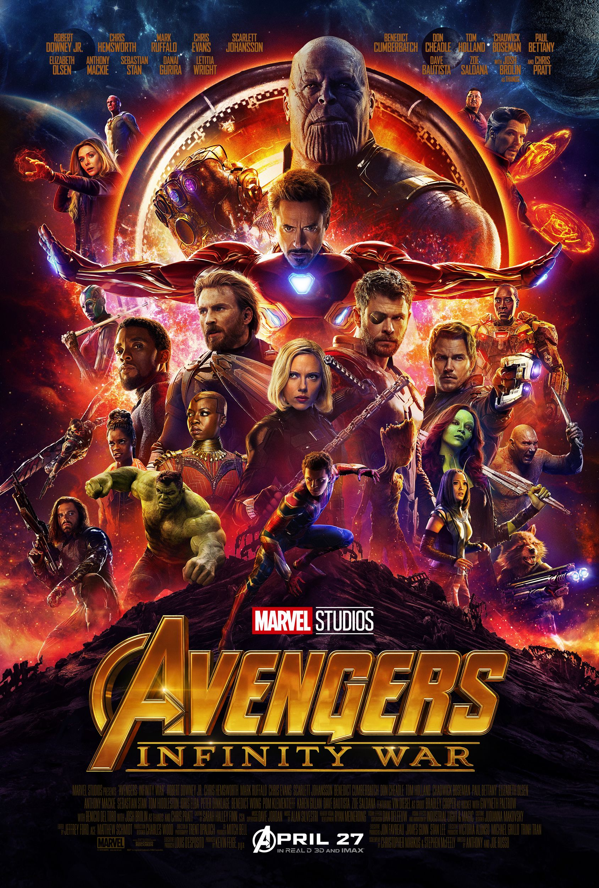

|  |
Movie Name: |
Avengers: Infinity War (2018) |
|
Thanos and his Children - Proxima Midnight, Ebony Maw, Corvus Glaive and Cull Obsidian - have attacked Thor's Asgardian ship in search of the Space Stone, which is housed in the Tesseract that Loki had stolen before Asgard's destruction. With Thanos already possessing the Power Stone after decimating Xandar, Thanos' army swiftly defeats the Asgardians. After a futile counter-attack from the Hulk, Loki offers the Tesseract to Thanos in exchange for Thor's life - only to be killed himself when Thanos anticipates Loki's attempt to betray and kill him. Moments before Glaive kills him, Heimdall uses the power of the Bifrost to send Hulk to Earth. Thanos and his Children then depart just after Thanos uses the Power stone to destroy the ship, leaving a mourning Thor behind and stranded in space. Hulk crash lands at the Sanctum Sanctorum in New York City and is reverts back to Bruce Banner, who informs Stephen Strange and Wong about Thanos' impending arrival. Strange and Banner contact Tony Stark and brief him about the Infinity Stones and Thanos. Realizing they must find Vision to protect the Mind Stone embedded in his head, Stark realizes he must make contact with Steve Rogers to find Vision, who has gone off the grid with Wanda Maximoff. Just then, Maw and Obsidian arrive in New York to seize the Time Stone from Strange, and Stark, Strange, Wong and Peter Parker confront them. Having been traumatized by his defeat at the hands of Thanos, Banner finds himself unable to transform into the Hulk and help in the battle. Maw incapacitates and captures Strange; Stark and Parker pursue his spaceship off Earth while Wong stays behind to protect the Sanctorum. Banner contacts the rest of the Avengers. In Scotland, where Wanda Maximoff and Vision have been hiding, the two are ambushed by Midnight and Glaive, but Steve Rogers, Natasha Romanoff and Sam Wilson fight them off. They decide to seek shelter in the Avengers Facility in Upstate New York, where they meet James Rhodes, who is once again mobile with bionic leg braces. Vision proposes that Maximoff destroy the Stone in his forehead to keep Thanos from retrieving it. Wanda immediately refuses however Rogers suggests that they travel to the one place that has the technology to safely remove the stone from Vision without killing him: Wakanda. Thor is rescued by the Guardians of the Galaxy, who had picked up the Asgardian ship's distress call. Thor guesses that Thanos would next be after the Reality Stone, which is in the possession of the Collector in Knowhere, but first he must retrieve a new weapon capable of killing Thanos from the dwarven planet of Nidavellir, where the only forge that can create such a weapon exists. Thor orders Rocket with him to Nidavellir, while Peter Quill, Gamora, Drax and Mantis travel to Knowhere. On the way there, Gamora talks to Quill, making him promise to kill her if the situation presents itself. Quill reluctantly promises he will. In Knowhere, Thanos ambushes the Guardians, having already retrieved the Reality Stone and created an illusion of an intact Knowhere to trap them. He captures Gamora after a crucial moment when Gamora begs Quill to kill her, using the Space Stone to escape. Thanos reveals that he knows that Gamora already knows the location of the Soul Stone after prying information from a tortured Nebula. Nebula escapes and signals the remaining Guardians to meet her on Titan, Thanos' home world. Thanos and Gamora travel to the planet of the Soul Stone, Vormir, where the Red Skull, the Stone's keeper, informs him that retrieving the Stone carries a heavy price: it can only be retrieved by sacrificing the life of someone he truly loves. Despite his reluctance, Thanos tearfully throws Gamora off a tall cliff to her death and is granted the Soul Stone. Stark and Parker rescue Strange from Maw's torture chamber, and launch Maw out of the ship, killing him. Strange believes they should retreat to protect the Time Stone but Stark disagrees; he believes they should take the fight to Thanos instead of retreating like they've done in the past. The three leave to confront Thanos on Titan, where they meet Quill, Drax and Mantis and formulate a plan to remove Thanos' gauntlet. While discussing their tactics, Strange uses the Time Stone to view alternate futures, telling them he'd seen 14,000,605 of them, with only one where the Avengers win. Thanos teleports to Titan, where, after a brief conversation with Strange meant to distract him, the group engage Thanos hand-to-hand and manage to subdue him. Mantis is able to calm Thanos while Peter and Tony attempt to pry the gauntlet from his arm. Quill and Nebula, who'd arrived on Titan during the battle, deduce that Gamora is dead; an enraged Quill retaliates, hitting Thanos and breaking the group's hold on him. Thanos takes the gauntlet back and defeats the group, threatening to kill Stark unless Strange gives him the Time Stone. Strange does so and tells Tony they've "entered the end game." Thanos adds the stone to his gauntlet and departs Titan. Thor, Rocket and Groot arrive at an abandoned and desolate Nidavellir. Thor is puzzled that the giant forge is inactive. The giant dwarf Eitri tells them that Thanos forced the dwarves to create his gauntlet; in return, Thanos killed all the dwarves except for Eitri. After laboring to reactivate the forge and reignite the neutron star that powers it, the four create Stormbreaker, a battle axe that serves as Thor's new weapon and grants him the power of the Bifrost. Meanwhile, the Avengers arrive in Wakanda and task Shuri with safely extracting the Mind Stone from Vision. Thanos' Outrider army arrives and begins attacking Wakanda, and the Avengers, alongside the united Wakandan armies led by King T'Challa, mount a defense against Thanos' forces. Glaive infiltrates Shuri's lab and attacks Vision. The Outriders begin overwhelming the defending armies before Thor, Rocket and Groot arrive to join the battle. The tide seems to be turning for the Avengers, Midnight, Obsidian and Glaive are killed, but Thanos arrives for the Mind Stone. A tearful Maximoff destroys the still-implanted Mind Stone in Vision to prevent Thanos from retrieving it, but Thanos uses the Time Stone to reverse the event and pry out the Mind Stone from Vision, killing him again. Thor attacks and drives Stormbreaker into Thanos' chest, but Thanos survives long enough to snap his fingers with the gauntlet. On a faraway world he finds Gamora as a child. When he confirms that he achieved his goal, she asks him what it cost. His answer is "Everything." Back on Earth, Thor looks on in horror as Thanos, his gauntlet now battered from the effort and his left arm and part of his chest burned, teleports away. Thanos' goal of eradicating half of all life in the universe comes to fruition as people begin disintegrating; Bucky Barnes, Groot, Peter Parker, Quill, Dr Strange, T'Challa, Sam Wilson, Drax, Mantis and Wanda Maximoff all dissolve into ash. In Wakanda, only Rogers, Thor, Banner, Romanoff, James Rhodes, Rocket, Okoye and M'Baku remain of the heroes. On Titan, only Nebula and Stark are left alive. Thanos awakens fully healed on another lush, green planet and serenely watches the sunset, smiling slightly, satisfied at having achieved his ultimate goal. In a post-credits scene, the Earth is in chaos as people begin dissolving into ash; driverless cars crash on the street and a helicopter is seen crashing into a skyscraper and exploding. Former S.H.I.E.L.D. Director Nick Fury and Deputy Director Maria Hill witness the scene on the street before they dissolve themselves. Before he vanishes, Fury manages to send a final distress signal to Captain Marvel. |
||